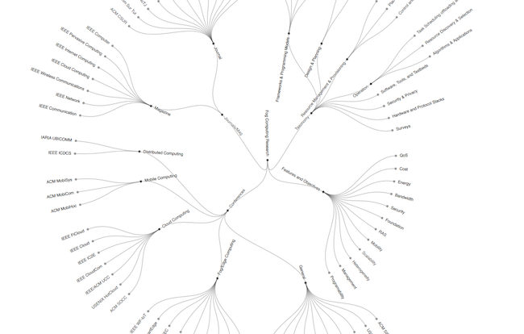

Ashkan Yousefpour
Ph.D. Student
Research Interests: Fog Computing, Internet of Things, Cloud Computing, Security & Privacy, Graph Theory
Contact
Email: ashkan [at] utdallas.edu
Biography
Ashkan is a Ph.D. student at Erik Jonsson School of Engineering & Computer Science at the University of Texas at Dallas. He is third year Ph.D. student at the Department of Computer Science. His interests are Computer Networking, Software Development, Fog/Cloud Computing, Web Development & Design, IoT, Security, Algorithms & Data structures.
He obtained his master's degree in August 2016 from the University of Texas at Dallas. He is normally serving the Department of Computer Science as a Teaching Assistant or Research Assistant.
Publications while at Advanced Networks Research Lab
Full list of publication is available on Ashkan's personal homepage
| Year | Authors | Paper | [J]ournal / [C]onference |
|---|---|---|---|
| 2018 | Ashkan Yousefpour, Genya Ishigaki, Riti Gour, Jason P. Jue | On Reducing IoT Service Delay via Fog Offlading, Vol. 5, Iss. 2 | [J] IEEE Internet of Things Journal |
| 2017 | Genya Ishigaki, Riti Gour, Ashkan Yousefpour, Norihiko Shinomiya, Jason P. Jue | Cluster Leader Election Problem for Distributed Controller Placement in SDN | [C] IEEE GLOBECOM 2017, Singapore, December 2017 |
| 2017 | Riti Gour, Jian Kong, Genya Ishigaki, Ashkan Yousefpour, Sangjin Hong, Jason P. Jue | Survivable Routing in Multi-domain Optical Networks with Geographically Correlated Failures | [C] IEEE GLOBECOM 2017, Singapore, December 2017 |
| 2017 | Ashkan Yousefpour, Genya Ishigaki, and Jason P. Jue, | Fog Computing: Towards Minimizing Delay in the Internet of Things | [C] IEEE EDGE 2017, Honolulu, Hawaii, June 2017 |
| 2016 | Ruijie Zhu, Yongli Zhao, Hui Yang, Xiaosong Yu, Jie Zhang, Ashkan Yousefpour, Nannan Wang, Jason P. Jue | Dynamic time and spectrum fragmentation-aware service provisioning in elastic optical networks with multi-path routing | [J] Optical Fiber Technology, Volume 32, December 2016, Pages 13-22 |
| 2016 | Ruijie Zhu, Jason P. Jue, Ashkan Yousefpour, Yongli Zhao, Hui Yang, Jie Zhang, Xiaosong Yu, and Nannan Wang, | Multi-path Fragmentation-aware Advance Reservation Provisioning in Elastic Optical Networks | [C] IEEE GLOBECOM, Washington DC, December 2016 |
Supervised Students
Ashkan has supervised the following undergraduate and graduate students, while they were present in ANRL. Ashkan is thankful to the works of the outstanding students who volunteered in the ANRL and helped him in the ongoing projects.
Ashkan led the group and contributed to the group project Instant Accident Reporting and Crowdsensed Road Condition Analytics for Smart Cities, which received Honorary Mention in the 2017 IEEE ComSoc Student Competition “Communications Technology Changing the World”.
| Name | Year while in the lab | Projects Worked on | Present During |
|---|---|---|---|
| Siddartha Devic | Sophomore | Researched in Fog Computing and machine learning, developed algorithms and software for deep learning models in fog computing, developed scripts for paper parsing | Summer 2018, Fall 2018 |
| Alan Liao | Sophomore | Researched in Fog Computing and machine learning, developed algorithms and software for deep learning models in fog computing | Summer 2018, Fall 2018 |
| Ashish Patil | M.S. Student | Researched and published a paper in Fog Computing, helped running the Cloud/Fog/IoT testbed, helped obtaining and analyzing real-world network traffic traces | Fall 2017 |
| Harshavardhan Nalajala | M.S. Student | Helped setting up and running the SDN testbed, for testing and developing applications related to fog and NFV. | Fall 2017 |
| Caleb Fung | Junior | Researched in Fog Computing, published a paper in Fog Computing, helped running the Cloud/Fog/IoT testbed, contributed to the group project Instant Accident Reporting and Crowdsensed Road Condition Analytics for Smart Cities, which received Honorary Mention in the 2017 IEEE ComSoc Student Competition “Communications Technology Changing the World”. | Summer 2017, Fall 2017, Spring 2017 |
| Tam Nguyen | Junior | Researched in Fog Computing, published a paper in Fog Computing, helped running the Cloud/Fog/IoT testbed, contributed to the group project Instant Accident Reporting and Crowdsensed Road Condition Analytics for Smart Cities, which received Honorary Mention in the 2017 IEEE ComSoc Student Competition “Communications Technology Changing the World”. | Summer 2017, Fall 2017, Spring 2017 |
| David Hong | Freshman | Contributed to the group project Instant Accident Reporting and Crowdsensed Road Condition Analytics for Smart Cities, which received Honorary Mention in the 2017 IEEE ComSoc Student Competition “Communications Technology Changing the World”. | Summer 2017 |
| Daniel Zhang | Freshman | Contributed to the group project Instant Accident Reporting and Crowdsensed Road Condition Analytics for Smart Cities, which received Honorary Mention in the 2017 IEEE ComSoc Student Competition “Communications Technology Changing the World”. | Summer 2017 |
Current Research
Ashkan is currently working on problems related to the newly introduced concept called "Fog Computing". He is interested in fundamental problems related to the fog computing. In other words, problems dealing with architectural design of fog networks, benefit and cost trade-offs in fog, interaction of fog and cloud, resource allocation in fog, etc.
Here is some info about fog computing.
Fog Computing
Fog is a system-level horizontal architecture that distributes resources and services of computing, storage, control and networking functions closer to user, anywhere along the continuum from Cloud to Things. [Reference]
Why Fog Computing?
The Internet of Things (IoT) is likely to be incorporated into our daily life, in areas such as transportation, healthcare, industrial automation, smart home, and emergency response. The IoT enables things to see and sense the environment, to make coordinated decisions, and to perform tasks based on these observations. Fog computing is an intelligent layer sitting between cloud and IoT, that brings low latency, location awareness, and wide-spread geographical distribution for the IoT. Inheriting main concepts of cloud computing, fog provides computation, storage, and networking services to end- users, but at the edge of the network.
With the Internet of Things (IoT) becoming a major component of our daily life, understanding how IoT is implemented is becoming a challenging problem. Currently most interaction between the IoT devices and the supporting back-end servers is done through large scale cloud data centers. However, with the exponential growth of IoT devices and the amount of data they produce, communication between “things” and cloud will be costly, inefficient, and in some cases infeasible. Fog computing serves as solution for this as it provides computation, storage, and networking resource for IoT, closer to things and users. One of the promising advantages of fog is reducing service delay for end user applications, whereas cloud provides extensive computation and storage capacity with a higher latency. The other advantage of fog is saving network bandwidth, when a significant portion of the processing, storage and networking can be handled close to the edge devices. Fog also improves scalability, security, and agility.
More information about fog can also be found here: OpenFog Consortium definition of fog
Where to find technical papers?
Check out the list of conferences, journals, magazines that publish technical papers on fog/edge computing in the link below. (There, you can also find this picture which is an all-in-one figure for fog computing research taxonomy and conferences)
